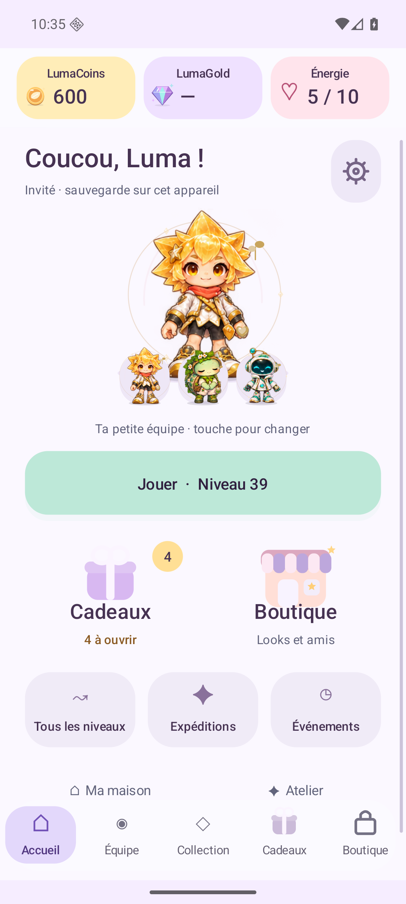
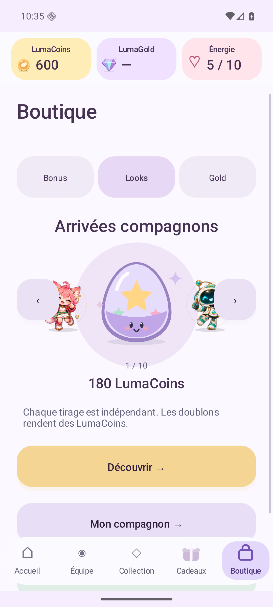
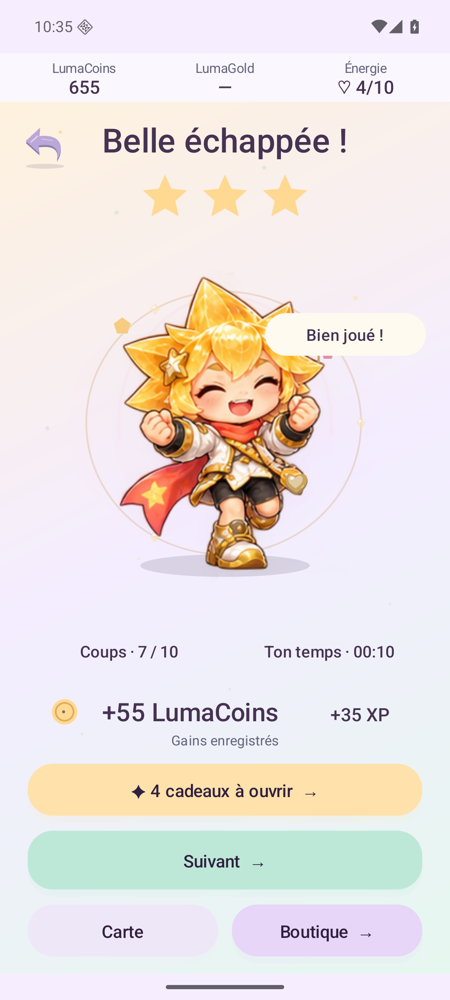

Ton petit moment de jeu.Your little moment to play.
Un compagnon à retrouver. Un puzzle à démêler. Un petit cadeau à ouvrir. Explore un accueil plus léger et une boutique pleine de personnalités, puis repars à l’aventure avec ton équipe.A companion to come back to. A puzzle to untangle. A little gift to open. Explore a lighter home and a boutique full of personality, then head into the next adventure with your squad.
Candidate à essayer · Annonces de test · Activation commerciale séparéePlaytest candidate · Test ads · Commercial activation remains separate
Tes soldes restent visibles. Tes cadeaux attendent ton clic.Your balances stay visible. Your gifts wait for your tap.

Capture Android native non retouchéeUnedited native Android capture
1–3compagnons dans ton équipecompanions in your squad
6familles de talentsskill families
37compagnons à rencontrercompanions to meet
1 000puzzles de la route UU Journey puzzles
UN PETIT MONDE À EXPLORERA LITTLE WORLD TO EXPLORE
Moins de bruit. Plus de petits plaisirs.Less clutter. More little delights.
Accueil, Équipe, Collection, Cadeaux, Boutique : cinq repères pour retrouver tes envies. La maison et l’atelier restent à portée de main.Home, Squad, Collection, Gifts, Boutique: five clear places to find what you want. Your room and workshop remain close by.
Un vrai cadeau gagnéA gift you have earned
Les quêtes du jour et de la semaine affichent leur progression réelle. Une fois prêt, ouvre ton cadeau : il reste là jusqu’à ton clic. Un cadeau récupéré ne se réclame pas deux fois.Daily and weekly quests show real progress. Once ready, open your gift: it stays until your tap. A collected gift cannot be claimed twice.
Une boutique à regarderA boutique to browse
Compagnons, looks et petits coups de pouce se découvrent en carrousel. Prix, stock, possession et aperçu restent explicites avant une action. Les probabilités des rencontres se consultent avant le tirage.Browse companions, looks and little boosts in a carousel. Prices, stock, ownership and previews stay clear before an action. Arrival odds are available before a draw.
Ton équipe joue avec toiYour squad plays with you
Retrouve les six familles de talents : guider, révéler, prévoir, pousser, enchaîner et revenir. Deux familles utilisées chargent une Résonance. Les tenues changent le look ; chaque compagnon apporte son talent.Keep the six skill families: guide, reveal, preview, push, flow and rewind. Two used families charge Resonance. Outfits change the look; each companion brings their skill.
LumaCoins : gagnés en jouant. LumaGold : monnaie premium de compte, avec un solde test séparé dans Lab. Les achats réels restent fermés. Énergie de session : distincte de la Charge des talents. Un solde indisponible reste indiqué comme tel.LumaCoins: earned in play. LumaGold: a separate account wallet for premium currency, with an isolated test balance in Lab. Live checkout remains closed. Session energy: separate from talent charge. An unavailable balance is shown as unavailable.
10 énergie maximum, +1 toutes les 10 minutes. Un nouvel essai coûte 1 à partir du niveau 11 et dans les défis, Remix et expéditions. Reprendre la même partie, le tutoriel, les niveaux 1–10 et l’entraînement entre amis restent gratuits. Recharge de 10 pour 50 LumaGold préparée, uniquement testable dans Lab.Up to 10 energy, +1 every 10 minutes. A new attempt costs 1 from level 11 and in challenges, Remix and expeditions. Resuming the same run, the tutorial, levels 1–10 and friend practice stay free. The 10-energy refill for 50 LumaGold is prepared and testable only in Lab.
Les règles et budgets des plateaux restent explicites. La progression et les LumaCoins restent sur cet appareil ; la connexion Google ne synchronise pas la sauvegarde.Board rules and budgets remain explicit. Progress and LumaCoins stay on this device; Google sign-in does not synchronize the save.
VU SUR ANDROIDSEEN ON ANDROID
Du premier clic au petit triomphe.From the first tap to a little triumph.
Accueil, boutique et victoire : trois vues réelles de cette candidate, en français et en anglais. Les sons et les mouvements se règlent dans le jeu.Home, boutique and victory: three real views of this candidate, in French and English. Sound and motion can be adjusted in the game.
Un accueil tout douxA softer home
Ton compagnon équipé, ton équipe et un bouton Jouer clair.Your equipped companion, your squad and one clear Play button.

Une petite boutique à explorerA little boutique to explore
Un objet à la fois, ses vrais prix et un aperçu avant de choisir.One item at a time, real prices and a preview before choosing.

Le plaisir du geste réussiA little win to enjoy
Un résultat lisible et les cadeaux réellement prêts à récupérer.A clear result and gifts that are actually ready to collect.
Captures natives non retouchées. Les contrôles techniques et les simulations ne mesurent ni le plaisir, ni la rétention, ni le confort sur tous les téléphones.Unedited native captures. Technical checks and simulations do not measure enjoyment, retention or comfort on every phone.
UN PETIT MONDE DE PERSONNALITÉSA LITTLE WORLD OF PERSONALITIES
Trouve celui qui te ressemble.Find a companion. Make it your own.
24 compagnons Luma et 13 interprétations Mini LoL. De face, de dos, en plein saut ou dans une stance bien à eux : explore les dessins réellement présents dans cette candidate.24 Luma companions and 13 Mini LoL interpretations. Front, back, mid-jump or in a signature stance: explore the actual drawings included in this candidate.
✦
37 personnalités. Laquelle vient avec toi ?37 personalities. Who is coming with you?
Nova
Collection LumaLuma collection
Les aperçus se chargent à ton choix, une planche à la fois. Les niveaux visuels 1, 3, 6 et 10 montrent les quatre formes ; les explorer ici ne débloque rien dans ta partie.Previews load when you choose, one sheet at a time. Visual levels 1, 3, 6 and 10 show the four forms; exploring them here does not unlock anything in your game.
Mini LoL est un fan art non officiel de personnages appartenant à Riot Games. Riot n’approuve ni ne sponsorise ce prototype. Aucune autorisation pour cette intégration n’a été vérifiée.Mini LoL is unofficial fan art of characters owned by Riot Games. Riot does not endorse or sponsor this prototype. No permission for this integration has been verified.Politique officielle RiotOfficial Riot policy · NoticesNotices
PRENDS UN INSTANTTAKE A MOMENT
Chaque lieu a sa couleur.Every place has its own sound.
Les quatre extraits de la 1.17 restent disponibles, à lancer quand tu le souhaites. Rien ne démarre automatiquement.The four 1.17 previews remain available for you to start whenever you like. Nothing plays automatically.
AventureAdventure
Extrait de 10 secondes10-second preview
MaisonHome
Extrait de 10 secondes10-second preview
CollectionCollection
Extrait de 10 secondes10-second preview
AtelierWorkshop
Extrait de 10 secondes10-second preview
Rendus du synthétiseur du jeu en 1.17, au volume musical par défaut de 0,27. Ce ne sont pas des enregistrements de téléphone. Chaque extrait a une fin fondue pour cette écoute.Rendered by the 1.17 game synthesizer at its default music gain of 0.27. These are not phone recordings. Each preview has an ending fade for this listening sample.
À TOI DE JOUERYOUR TURN TO PLAY
Un petit monde. À essayer.A little world. To playtest.
Distribution directe en APK. Les annonces restent en mode test ; les services et transactions réels ont leur qualification séparée. Aucune publication Play n’est impliquée.Direct APK distribution. Ads remain in test mode; live services and transactions require separate qualification. No Play publication is implied.